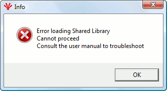

Known bugs and Work around
The following are the list of known bugs in the openCONFIGURATOR V 1.2.0

"Error Loading Shared library Cannot proceed Consult the user manual to troubleshoot " for binaries downloaded from SourceForge on some machines.
Description:
The above error happens when the shared libraries are corrupted or when the shared libraries are missing. On some Windows machine, the error is happening in a undefined way. We are in the process of fixing it. Till we make a release for this issue, please follow the work around mentioned below.
Work Around 1:
Install the "Microsoft Visual C++ Redistributable Package (x86)" if Visual Studio is not installed. If this doesn't solve the issue, Work Around 2 will solve the issue.
Work Around 2:
Recompile the shared libraries on the machine in which the error happens. Follow section “Compilation” for recompilation.
Issue with Non-ASCII project names
Description:
If non-ASCII project names are used, there may be issues in using the project.
Work Around:
To avoid this use ASCII project names only.